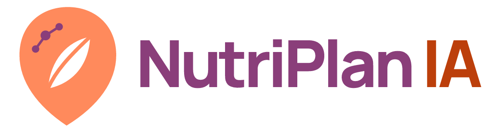

ALIMENTA TU MEJOR VERSIÓN
NutriPlan IA arma tu semana de comidas con lo que hay en tu cocina, cuidando tus alergias, tus gustos y tu presupuesto. Hecha para familias y estudiantes de Pasto.
Versión 1.1 · APK para Android (ARM64) · Gratis
La comida del momento, lo que vence pronto y cuánto llevas del día.
Lo que tienes con su vencimiento y una lista de mercado que funciona sin señal.
Un día, una semana o un mes, con su costo, sin repetir y usando primero lo que vence.
Pide «algo rápido para la cena», escribiendo o por voz.